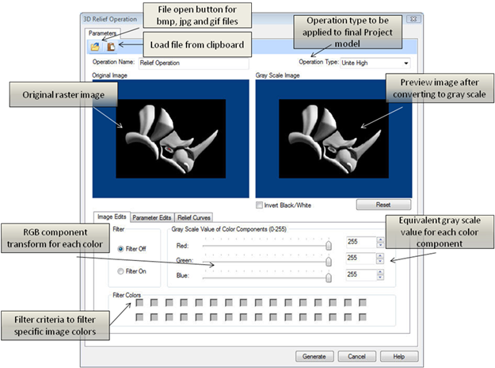
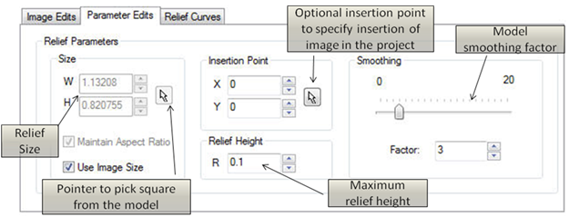
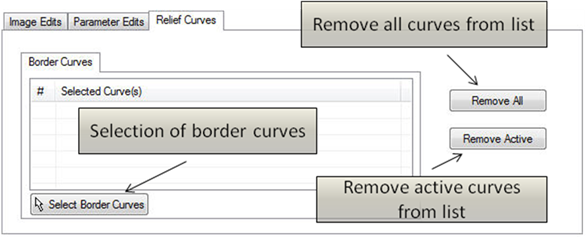
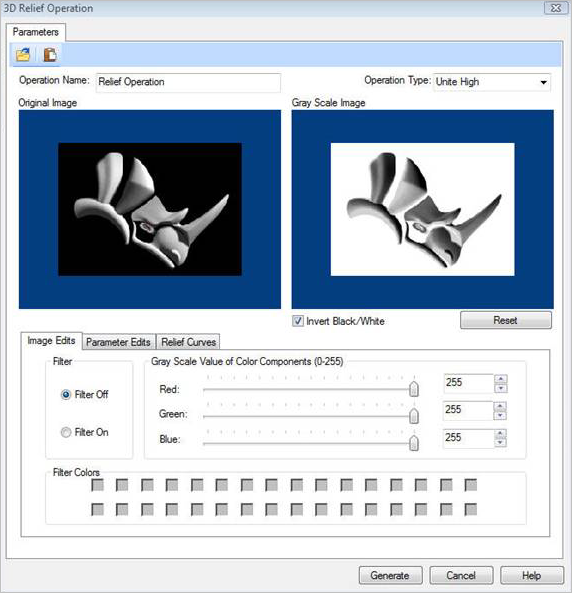
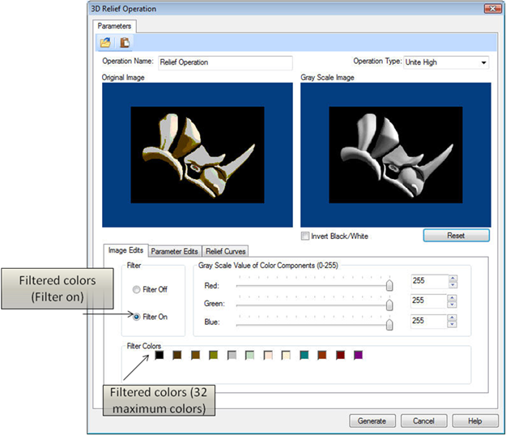
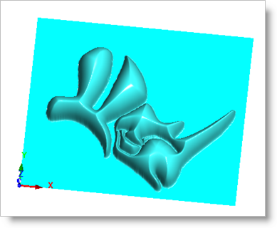

This part is required for converting the Raster images to gray scale image, which in turn will be converted into the 3D model based on the gray scale values of each pixel in the raster image.
On selecting the Image file, the Create Relief dialog appears as shown below. As seen in the dialog below, you can see the original image and the preview image at the same time.
 Dialog Box: 3D Relief Operation
Allows you to change the name if so desired by typing the new name.
|
The invert color option is provided for you to be able to invert the gray scale. The gray scale inversion is required in case the model needs to be created as a relief depth instead of relief height.
|
The reset button is provided for you to be able to reset the changes that have been done before such as inverting the image, or changing the Gray scale value color components.
|
This option turns off the filter for colors thus not filtering any colors.
|
This option turns on the filter for colors thus allowing you to filter out specified colors.
|
You can convert the image into a gray-scale image by adjusting the red, blue and green components on the dialog bar. By adjusting the slider bar in the dialog bar, you can adjust the weight of color component to be converted into gray scale. The slider bar indicates the approximate value of the component, and its equivalent value in gray scale is shown in the text box in front of the slider bar. The slider bar determines the weights of the color components for conversion to gray-scale.
|
This option allows you to filter specific image colors.
|
You can update any changes that were made by clicking the Generate button.
|
|
The dialog below allows you to edit the parameters available within the Parameter Edits tab.
 Dialog Box: 3D Relief Operation, Parameter Edits tab
The width (W) and height (H) of the relief size can be specified by entering numerical values, using the up/down arrows or by using the pointer to pick the area from the model.
|
If Use Image Size is unchecked this will enable this function allowing you to either maintain the aspect ratio (i.e. scale factor) if checked or if it is unchecked it will not honor the aspect ratio. The aspect ratio refers to the width/height ratio of the image. The pick button allows user to pick two points such that the aspect ratio of the image remains same, and the image does not get distorted in the mapping process. On pressing the pick button, the dialog box gets minimized allowing you to select two points. You can cancel the pick operation by right clicking on the mouse.
|
If this option is checked, this will honor the original image size. It will use the original image size and place it within the project workspace.
|
You can specify the insertion point of the image by either entering numerical values, using the up/down arrows or by using the pointer to pick the insertion point within the project.
|
You can specify the relief height by entering numerical values or using the up/down arrows.
|
This allows you to specify the smoothness of the model. You can specify the value between 0-20 by using the slider bar, entering numerical values or using the up/down arrows.
|
|
The dialog below allows you to edit the parameters available within the Relief Curves tab.
 Dialog Box: 3D Relief Operation, Parameter Edits tab
The borders can be selected by choosing the Border Curves tab under the Relief Curves tab using the Select Border Curves button on the dialog. The dialog will be minimized and you can now pick the curves.
|
This option allows you to remove all the curves from the Selected Curve(s) list.
|
This option allows you to remove the specified/highlighted curve from the Selected Curve(s) list.
|
|
The figure below shows the dialog with the inverted image, after the check box for inverting the image is applied.
 Dialog Box: 3D Relief Operation |
The second strategy of creating a relief by filtering a certain color can be used to create a relief from a reduced set of colors. By selecting the Filter Colors option, the Original Image is converted into a 32 Color Image. The check boxes also get populated based on the number of the colors the image has reduced to. By clicking the check boxes, we can either select or deselect a color to be a part of the final relief. This method can be very useful to filter out some colors from the Image and create relief of only a certain part of the image.
 Dialog Box: 3D Relief Operation
The Final model obtained will look as shown in the figure below:
 Strategy 2 Final Model |